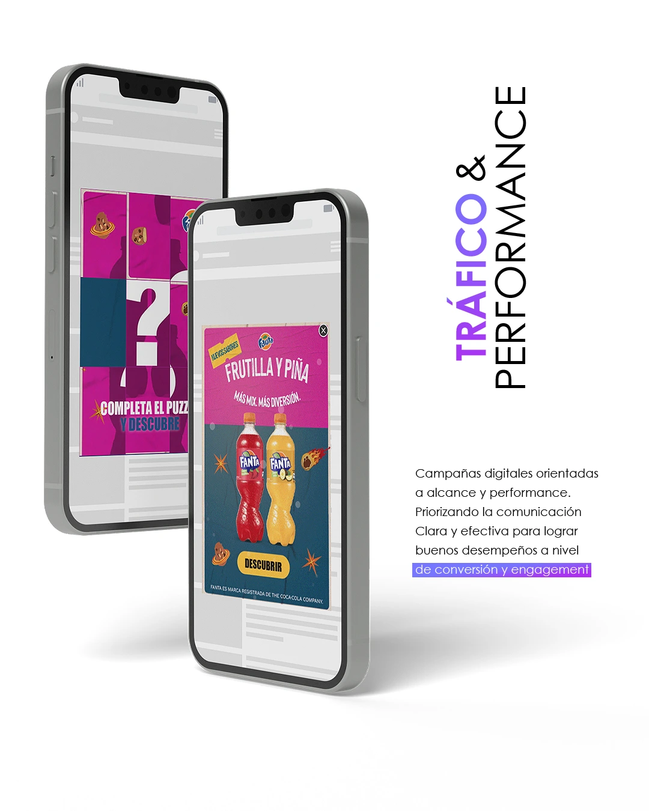
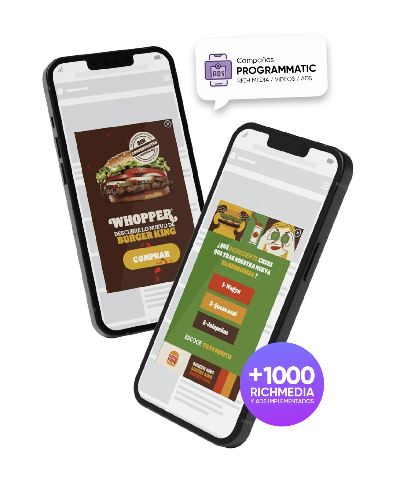
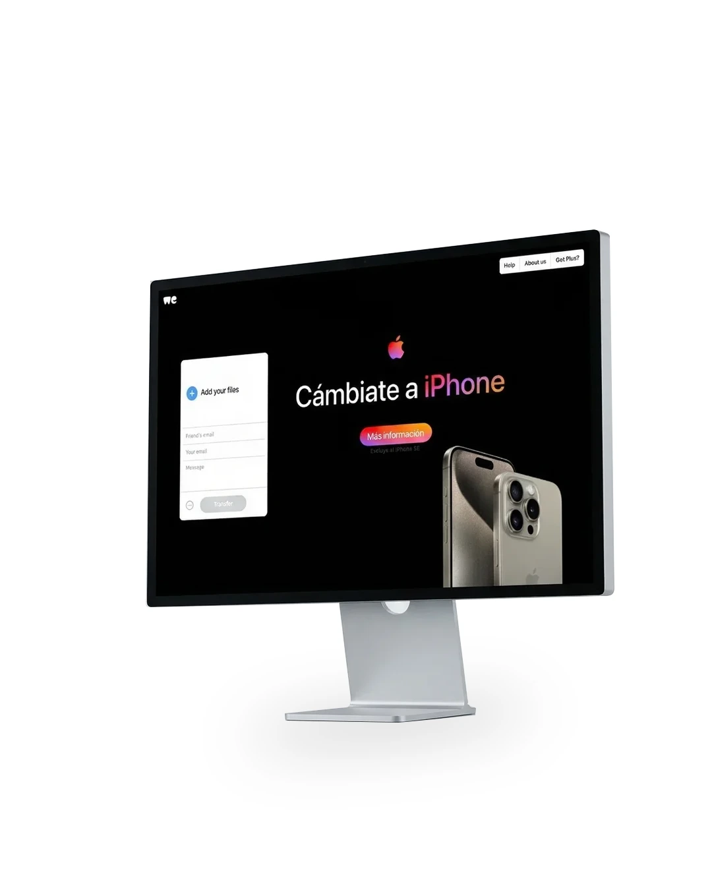
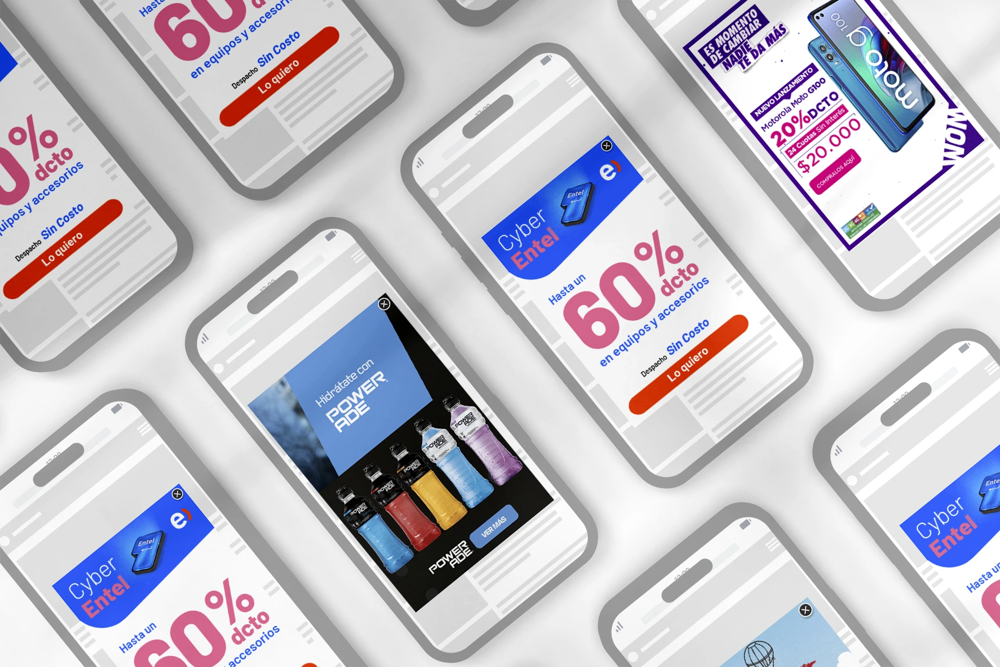
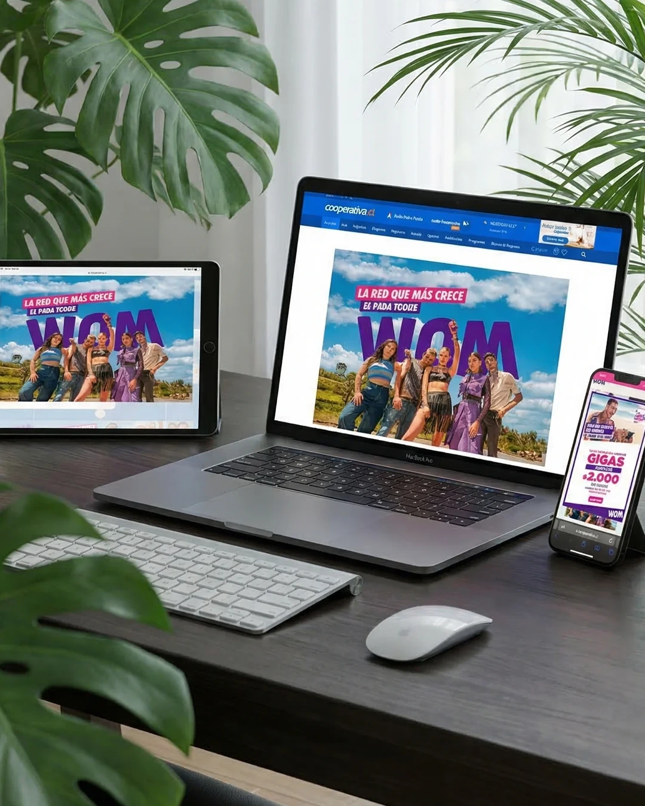
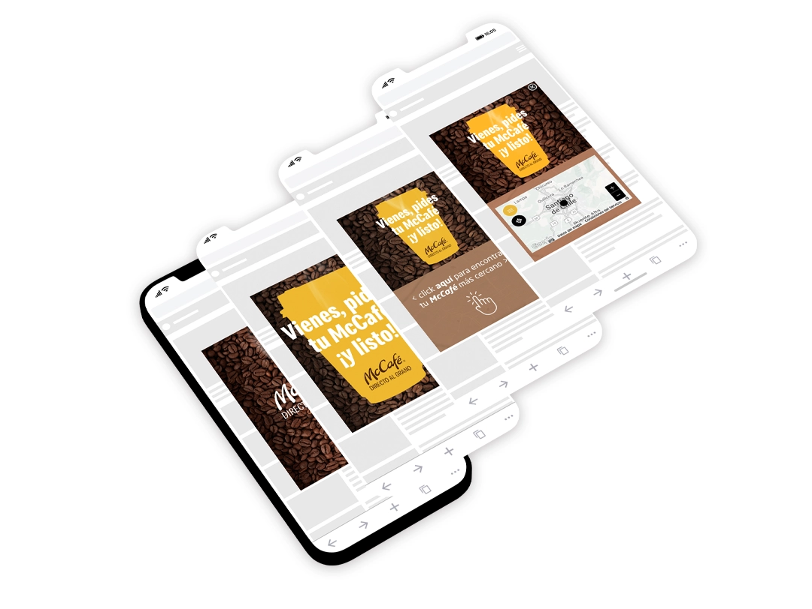

Design and execution of programmatic and performance advertising campaigns for leading media and brands in Chile and LATAM. Working with platforms such as BioBío Chile, Cooperativa, ADN Radio, T13, and others, we developed display, native, and video ad creatives optimized for high CTR and conversion — spanning Google Display Network, DV360, Meta Ads, and programmatic DSPs. Each campaign is built with a clear performance goal: visibility, traffic, or conversion, always maintaining visual quality and brand consistency across every placement.






